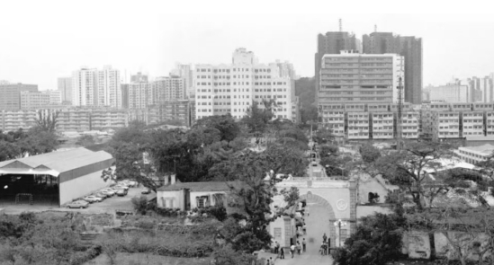

时光相册丨25年的成长印记：看澳门发展变迁
来源:新浪新闻|相关链接

1987年在广东省珠海市拱北口岸眺望澳门的楼群。
“你可知Macau不是我真姓
我离开你太久了母亲……”
伴随着《七子之歌》的感人旋律
历经风雨的澳门
终于在1999年12月20日
回到祖国怀抱
1999年12月20日，澳门庆祝回归祖国活动委员会举办“迈向美好明天大巡游”，庆祝澳门回归祖国。
时光荏苒
25年过去
“一国两制”这一伟大创举
在澳门得到全面准确贯彻落实
澳门搭上国家发展的高速列车
擦亮国际大都市的金名片
书写了“祖国好，澳门会更好”的精彩故事
2024年7月5日拍摄的澳门旅游塔。2001年12月19日，澳门旅游塔正式对外开放，成为澳门新地标之一。
2024年12月1日拍摄的澳门大桥。2024年10月1日，澳门首座双向八车道跨海大桥——澳门大桥正式通车。
25年来
澳门如重获新生般焕发生机
成为名副其实的“莲花宝地”
呈现欣欣向荣的昌盛景象
濠江激荡，盛世莲开
让我们翻开时光相册
在昔今对比中
一睹澳门回归祖国25周年的成长印记
↓↓↓
1999年
国务院赠送澳门特别行政区政府
“盛世莲花”雕塑
雕塑总高6米
花体最大直径3.6米
莲花盛开，亭亭玉立，冉冉升腾
象征澳门繁荣昌盛
25年间
澳门从一座寂静冷清的海滨小城
跃升成亚洲最富裕的城市之一
文旅元素的活跃度与包容性
以及不断完善的基础设施
让陆地面积只有33.3平方公里的澳门
成为魅力四射的旅游目的地
2005年
“澳门历史城区”被列入
联合国教科文组织《世界遗产名录》
这里保留着
葡萄牙和中国风格的
古老街道、住宅、宗教和公共建筑
见证着东西方美学、文化以及建筑的交融
大三巴牌坊是澳门最具代表性的地标
昔日圣保禄教堂的遗迹
仅存的正面前壁如历史的见证者
承载了澳门数百年的风雨
每逢春节、国庆、回归纪念日等
大三巴附近便会成为举办活动的重要场所
大炮台作为澳门重要的历史防御遗址
如今成为俯瞰澳门城市景观的打卡地
妈阁庙是澳门历史最悠久的庙宇之一
体现了中国传统文化特色
数百年来香火不断
是当地海上文化的重要代表
历史悠久的东望洋灯塔
坐落在澳门自然地貌最高处——松山山顶
建于1865年
至今基本保持原貌
隐于闹市的八角亭图书馆
原为澳门中华总商会附设的书报室
是澳门最早对外开放的中文图书馆
这里不仅是读书学习的场所
也是不少市民放松心情的好去处
除了历史城区
石排湾郊野公园的大熊猫馆
是近年来澳门的热门旅游目的地
这里住着4只大熊猫
中央赠送澳门的大熊猫“开开”“心心”
和它们的双胞胎儿子“健健”“康康”
在此过着闲适快乐的生活
澳门还是著名的“美食之都”
从平价小食到奢华大餐
澳门美食种类繁多
吸引世界各地食客慕名而来
走街串巷品味“澳门味道”
搭乘新开通的澳门城市轻轨
从历史城区到新横琴口岸只需二十几分钟
横琴开发因澳门而生
担负起促进澳门经济适度多元发展的使命
2021年
《横琴粤澳深度合作区建设总体方案》出台
琴澳一体化加速推进
搭乘新开通的澳门城市轻轨
从历史城区到新横琴口岸只需二十几分钟
横琴开发因澳门而生
担负起促进澳门经济适度多元发展的使命
2021年
《横琴粤澳深度合作区建设总体方案》出台
琴澳一体化加速推进
今天的澳门地平线上增添了
旅游塔和新葡京等新地标
站在松山之上远眺
澳门的现代与繁华尽收眼底
澳门回归
与祖国同呼吸、共命运
写下400多年来从未有过的新传奇
25岁的澳门特别行政区
犹如一朵盛开的莲花
绽放着无限活力与光芒
澳门回归祖国25周年大事记：“回归后的25年，是澳门历史上最辉煌的25年”
来源：极目新闻|相关链接
澳门回归祖国25载，莲花宝地日日新。
1999年12月20日，中国政府恢复对澳门行使主权，“孤苦亡告，眷怀祖国”的游子终于回到母亲怀抱。那是刷新中华民族历史的高光时刻——澳门翻开“一国两制”、“澳人治澳”、高度自治的历史新页。
25年，澳门经济快速增长、民生持续改善、社会和谐稳定、发展天地愈加广阔；25年，澳门以前所未有的发展奇迹，向世界展示了具有澳门特色“一国两制”的成功实践。25年来，澳门如重获新生般焕发生机，成为名副其实的“莲花宝地”。让我们翻开时光相册，一睹澳门回归祖国25周年的成长印记。
澳门历史城区被列入《世界遗产名录》
澳门，虽小却大，既古朴又摩登。400多年来，逐渐发展成为一个多元文化交汇的城市，拥有丰富而独特的历史文化遗产。2005年，澳门历史城区成功入选《世界文化遗产名录》，成为中国第31处世界遗产。
澳门历史城区保留着葡萄牙和中国风格的古老街道、住宅、宗教和公共建筑，见证了东西方美学、文化以及建筑的交融。作为联合国教科文组织《世界遗产名录》遗产地，这片城区以其独特的历史建筑和文化遗存闻名。大三巴牌坊是澳门最具代表性的地标，昔日圣保禄大教堂的遗迹展现了中西合璧的建筑艺术。妈阁庙作为澳门历史最悠久的庙宇之一，体现了中国传统文化特色，是当地海上文化的重要代表。议事亭前地以其波浪形石板路和周围的欧式建筑，成为文化活动和公共生活的中心。郑家大屋是一座大型传统中式豪宅，是晚清时期著名思想家郑观应的故居，融合了中西建筑风格。大炮台作为澳门重要的历史防御遗址，如今成为俯瞰澳门城市景观的最佳地点之一。
家在澳门的大熊猫“开心家族”
在澳门石排湾郊野公园里，生活着大熊猫一家，四名家庭成员分别是“开开”“心心”和它们的孩子“健健”“康康”。
2015年4月30日，中央政府赠送澳门的两只大熊猫“开开”和“心心”，乘专机从老家成都来到澳门。次年，它们的双胞胎宝宝“健健”和“康康”在这里出生，是澳门土生土长的第一对大熊猫宝宝。大熊猫一家给澳门同胞带来很多欢乐。“开心家族”不仅是澳门市民的“开心果”，也成为连接起澳门和祖国内地的情感纽带。
澳门被联合国教科文组织评为“创意城市美食之都”
澳门的城市特色，除了历史街区，还有遍布全城的美食。联合国教科文组织在北京时间2017年11月1日凌晨宣布，澳门正式成为“创意城市美食之都”，成为继成都、顺德之后第三个获此殊荣的中国城市。蛋挞、鱼蛋、牛杂、猪扒包……这些澳门美食总有一款戳中你的“味蕾”。另外，澳门还是全球人均米其林餐厅最多的城市，平均每1.3万人就拥有一家米其林餐厅。澳门餐饮行业总收益从25年前的14.9亿（澳门元，下同）上升至146.7亿，大幅增长近900%，从业人员数量也翻了3倍。
港珠澳大桥正式开通
40多年前，一位香港有识之士提出建设一座跨海大桥连接香港、澳门和广东的设想，但彼时财力有限，桥梁建造技术落后。改革开放以波澜壮阔之势，给中国带来沧桑巨变。随着国家综合实力提升和工程技术进步，梦想终于照进现实。经过粤港澳三地多轮协商讨论，2003年，港珠澳大桥前期工作协调小组成立，大桥正式开始筹备建设。这也是“一国两制”下粤港澳三地首次合作共建的超大型跨海交通工程。
“团队踏遍十几个国家的跨海工程现场，反复论证修改几百本设计研究方案。”时任前期工作协调小组办公室技术负责人、此后担任大桥总工程师的苏权科这样回忆起当时的场景。
2009年12月，港珠澳大桥开工建设。建设团队面对复杂恶劣的海洋条件，攻克一个个世界桥隧建造史上的难题，2017年7月大桥主体工程全线贯通。2018年10月，大桥正式通车运营。港珠澳大桥创下了多项“世界之最”，它是世界上最长的钢结构桥梁，仅主梁钢板用量就达到42万吨，相当于10座“鸟巢”的重量。开通6年来，经港珠澳大桥珠海公路口岸进出境车辆累计超1276万辆次，旅客数量超过6230万人次，这相当于澳门总人口的90多倍。
《横琴粤澳深度合作区建设总体方案》正式公布
2021年9月，《横琴粤澳深度合作区建设总体方案》发布，为横琴发展按下了加速键。三年多来，朝着促澳多元和琴澳一体化的高质量发展要求，合作区推动“四新”产业加快发展、澳人澳企快速增长、创新要素加快集聚、一体化发展格局加快建立，促进澳门经济适度多元发展的支撑作用正逐步显现。
今年3月，横琴粤澳深度合作区正式封关运行，标志着构建与澳门一体化高水平开放新体系迈出关键一步。横琴口岸实行“合作查验、一次放行”通关新模式，人员车辆货物通关效率大幅提高，最快只需20秒就可通关。如今，琴澳两地正以高质量一体化发展，书写“一国两制”实践新篇章。
科技研发和高端制造产业、中医药等澳门品牌工业、文旅会展商贸产业和现代金融产业等“四新”产业正在横琴茁壮成长。今年前三季度，合作区“四新”产业增加值216.03亿元，占地区生产总值的57.8%，提前完成合作区第一阶段发展目标。截至今年10月，澳企总数达6521户，较合作区成立时增长40.6%；今年前三季度澳资产业增加值26.29亿元，较2021年同期增长3.2倍。
“澳门科学一号”卫星成功发射
2023年5月21日16时00分，我国在酒泉卫星发射中心用长征二号丙运载火箭，成功发射首颗内地与澳门合作研制的空间科学卫星“澳门科学一号”。
该卫星作为国际首颗低纬度地磁场与空间环境的科学探测卫星，国内地球磁场探测精度最高的卫星，将显著提高我国空间磁测技术水平。该项目由国家航天局与澳门特别行政区政府联合开展，探测数据由双方共享，开辟了内地同澳门在航天等创新科技领域开展合作的新路径，拓展了以内地为基础、澳门为窗口开展空间科学、空间技术、空间应用广泛合作交流的新空间，为粤港澳大湾区区域发展和航天高质量发展增添了新动能。
今年11月，澳区全国政协委员、澳门基金会行政委员会主席吴志良在接受中新网“港澳会客厅”栏目采访时表示，澳门回归后的25年是澳门历史上最辉煌的时期。政治上，澳门完成了从殖民管理到“一国两制”的成功转变；经济上，从默默无闻的小城跃升为世界领先的经济体；文化上，澳门的国际影响力显著增强，文化自信更加坚定；教育领域，从回归初期仅5.5%的人口接受过高等教育，到2021年这一比例已超过30%，高等院校也从1所增至10所。他强调，这25年的巨变不仅体现在发展成就上，更体现在澳门人身份认同、归属感和自豪感的显著提升上。吴志良指出，澳门如今具备更好的条件，在国家发展战略中扮演更加积极的角色。
极目新闻综合新华社、中国新闻网、新华网、央视新闻客户端、人民网、人民日报、央视网、广州日报、CCTV4、国际在线等。
谱写“一国两制”成功实践的华彩篇章（庆祝澳门回归25周年）
来源：人民日报|相关链接
“‘一国两制’是一项开创性事业，澳门回归祖国已走过25年不凡历程。25年来，澳门在政治、经济、社会、民生各个领域创造了令世界瞩目的发展成就，事实证明：‘一国两制’行得通、办得到、得人心！”在即将迎来澳门回归祖国25周年之际，澳门特区行政长官贺一诚接受了记者采访。
坚守爱国爱澳核心价值，推进“一国两制”行稳致远
“25年来，国家把澳门作为掌上明珠，始终是澳门保持繁荣稳定的最坚强后盾，始终为澳门发展提供最大机遇。”贺一诚说，在中央的坚强领导下，在祖国内地的大力支持下，澳门特区历届政府和社会各界同心协力，开创了澳门历史上最好的发展局面，谱写了具有澳门特色的“一国两制”成功实践的华彩篇章。
回顾过去5年的施政工作，贺一诚表示，澳门特区政府始终全面准确、坚定不移地贯彻“一国两制”方针，有效维护宪法和澳门基本法确立的宪制秩序，坚定维护中央全面管治权，全面落实“爱国者治澳”原则，坚定维护国家主权、安全、发展利益，以高度的使命感、责任感依法履职尽责，不断开拓创新，全心全力服务居民、服务澳门、服务国家，以新气象新作为推动新时代具有澳门特色的“一国两制”成功实践不断向前发展。
回归以来，澳门特别行政区一直高度重视和认真履行维护国家安全的宪制责任。自2009年以来，澳门特别行政区顺利完成澳门基本法第二十三条规定的维护国家安全立法，设立由行政长官担任主席的澳门特别行政区维护国家安全委员会，积极推进国家安全教育，澳门维护国家安全形势总体良好。“2023年，我们完成《维护国家安全法》修改，完善了维护国家安全法律制度和执行机制，进一步夯实维护国家安全的制度根基。”贺一诚说。
贺一诚认为，全面落实“爱国者治澳”原则，是确保“一国两制”实践行稳致远的重要基础，是澳门保持长期繁荣稳定的关键所在。“本届特区政府完成修改《行政长官选举法》《澳门特别行政区立法会选举法》，顺利举行第七届立法会选举和第六届行政长官选举委员会委员选举。根据新修改的《行政长官选举法》，顺利完成第六任行政长官选举。完善公职人员就职宣誓相关法律制度，确保特区管治权牢牢掌握在爱国者手中。”贺一诚说。
爱国爱澳核心价值，已深入到各阶段的教育中，贯穿到澳门社会的方方面面。贺一诚说，过去5年，澳门扎实推进爱国爱澳教育工作，编订新《历史》和《品德与公民》等教材，实现大中小学校升挂国旗奏唱国歌全覆盖、规范化，建立“青少年爱国爱澳教育基地”等场馆，让爱国爱澳传统薪火相传。
推动经济适度多元，走可持续发展之路
回归以来，澳门经济实现跨越式发展。澳门GDP由1999年的519亿澳门元，增长到2019年的4445亿澳门元，保持年均11%的增长率，在发达经济体中位居前列。疫情防控平稳转段后，澳门2023年GDP增长高达80.5%。1999年至2023年，澳门人均GDP由1.5万美元增长至6.9万美元。
“推动经济适度多元是澳门实现长期繁荣稳定和可持续发展的必由之路。”贺一诚说，本届特区政府始终坚持将此作为施政的首要任务，即使面对新冠疫情带来的严峻挑战，推动经济适度多元的工作也从未松懈和停步。
贺一诚介绍，围绕“一中心、一平台、一基地”建设目标，本届特区政府确立“1+4”产业发展方向，编制并实施了澳门首个经济适度多元发展规划。“1”就是按照建设世界旅游休闲中心的目标要求，促进旅游休闲多元发展，做优做精做强综合旅游休闲业；“4”是持续推动大健康、现代金融、高新技术、会展商贸和文化体育等四大重点产业发展，逐步提升四大产业的比重。
2022年6月，澳门博彩法修订通过并生效，保障博彩业依法健康有序发展；当年年底，新一轮博彩经营权竞投完成。2023年，四大重点产业的增加值总额390.5亿澳门元，较2019年增加6.9%；博彩业占本地生产总值比重37.2%，较2019年减少14%，重点产业占总体经济的比重逐步上升。“整体来看，澳门经济适度多元发展工作取得了新成效。”贺一诚说。
2020年至2024年，澳门共举办大型体育盛事60项，大型文艺盛事56项，参与人次超过2100万。“特区政府致力推广澳门中西多元文化交融的鲜明特色和独特价值，举办更多大型推广活动。与此同时，继续增加澳门会议展览、娱乐表演等非博彩元素项目，持续加强‘旅游+’跨界融合，着力打造‘演艺之都’‘体育之城’，令来自世界各地的旅客感受到澳门是一座名副其实且具有非凡魅力的国际大都市。”贺一诚言语间充满信心。
融入国家发展大局，充分发挥澳门优势
融入国家发展大局是“一国两制”实践的应有之义，也是澳门探索发展新路向、开拓发展新空间、增添发展新动力的客观要求。
贺一诚介绍，2021年，澳门特区政府设立“融入国家发展工作委员会”，充分发挥独特优势，大力推进横琴粤澳深度合作区建设，积极参与粤港澳大湾区和“一带一路”建设，巩固和拓展与葡语国家的合作，融入国家发展大局各项工作呈现新气象。
贺一诚说，2021年，横琴粤澳深度合作区挂牌成立，粤澳共商共建共管共享的新模式，翻开横琴开发的新篇章。3年来，横琴粤澳深度合作区实现澳资经营主体和产业增加值明显增长，“四新”产业比重持续增加，涉澳民生指数显著提升，澳琴一体化进程明显提速。
“在继续保持中西方文化荟萃优势的同时，中央还给予澳门联系葡语国家的重任。”贺一诚说，澳门已举办6届“中国—葡语国家经贸合作论坛（澳门）部长级会议”，并两次举办“中国—葡语国家中央银行及金融家会议”。总部设在澳门的中葡合作发展基金总规模已达10亿美元，带动中国与葡语国家产生超过50亿美元投资。澳门还同葡萄牙、巴西、佛得角、圣多美和普林西比4个葡语国家的多个城市缔结了友好城市或姊妹城市关系。澳门作为中国与葡语国家商贸合作服务平台的作用日益突出。
“近期中央接连推出一系列惠澳利民政策措施，为澳门保持长期繁荣稳定源源不断注入新动力，充分彰显了中央对澳门的关怀和厚爱。”贺一诚说，相信积极抢抓国家发展带来的重大机遇，充分发挥澳门优势，以更大的担当作为，助力国家加快构建高水平对外开放新格局，定能更好擦亮澳门国际大都市“金名片”，不断推进具有澳门特色的“一国两制”成功实践取得新成效、开创新局面。